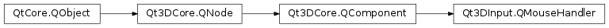

Qt3DInput.QMouseHandler¶
Synopsis¶
Functions¶
- def
containsMouse() - def
setContainsMouse(contains) - def
sourceDevice()
Slots¶
- def
setSourceDevice(mouseDevice)
Signals¶
- def
clicked(mouse) - def
containsMouseChanged(containsMouse) - def
doubleClicked(mouse) - def
entered() - def
exited() - def
positionChanged(mouse) - def
pressAndHold(mouse) - def
pressed(mouse) - def
released(mouse) - def
sourceDeviceChanged(mouseDevice) - def
wheel(wheel)
Detailed Description¶
Provides a means of being notified about mouse events when attached to a
QMouseDeviceinstance.Note
QMouseHandlercomponents shouldn’t be shared, not respecting that condition will most likely result in undefined behaviors.See also
-
class
PySide2.Qt3DInput.Qt3DInput.QMouseHandler([parent=nullptr])¶ Parameters: parent – PySide2.Qt3DCore.Qt3DCore::QNodeConstructs a new
QMouseHandlerinstance with parentparent.
-
PySide2.Qt3DInput.Qt3DInput.QMouseHandler.clicked(mouse)¶ Parameters: mouse – PySide2.Qt3DInput.Qt3DInput::QMouseEvent
-
PySide2.Qt3DInput.Qt3DInput.QMouseHandler.containsMouse()¶ Return type: PySide2.QtCore.bool
-
PySide2.Qt3DInput.Qt3DInput.QMouseHandler.containsMouseChanged(containsMouse)¶ Parameters: containsMouse – PySide2.QtCore.bool
-
PySide2.Qt3DInput.Qt3DInput.QMouseHandler.doubleClicked(mouse)¶ Parameters: mouse – PySide2.Qt3DInput.Qt3DInput::QMouseEvent
-
PySide2.Qt3DInput.Qt3DInput.QMouseHandler.entered()¶
-
PySide2.Qt3DInput.Qt3DInput.QMouseHandler.exited()¶
-
PySide2.Qt3DInput.Qt3DInput.QMouseHandler.positionChanged(mouse)¶ Parameters: mouse – PySide2.Qt3DInput.Qt3DInput::QMouseEvent
-
PySide2.Qt3DInput.Qt3DInput.QMouseHandler.pressAndHold(mouse)¶ Parameters: mouse – PySide2.Qt3DInput.Qt3DInput::QMouseEvent
-
PySide2.Qt3DInput.Qt3DInput.QMouseHandler.pressed(mouse)¶ Parameters: mouse – PySide2.Qt3DInput.Qt3DInput::QMouseEvent
-
PySide2.Qt3DInput.Qt3DInput.QMouseHandler.released(mouse)¶ Parameters: mouse – PySide2.Qt3DInput.Qt3DInput::QMouseEvent
-
PySide2.Qt3DInput.Qt3DInput.QMouseHandler.setContainsMouse(contains)¶ Parameters: contains – PySide2.QtCore.boolSee also
PySide2.Qt3DInput.Qt3DInput::QMouseHandler.containsMouse()
-
PySide2.Qt3DInput.Qt3DInput.QMouseHandler.setSourceDevice(mouseDevice)¶ Parameters: mouseDevice – PySide2.Qt3DInput.Qt3DInput::QMouseDeviceSets the mouse device of the
QMouseHandlerinstance tomouseDevice.See also
PySide2.Qt3DInput.Qt3DInput::QMouseHandler.sourceDevice()
-
PySide2.Qt3DInput.Qt3DInput.QMouseHandler.sourceDevice()¶ Return type: PySide2.Qt3DInput.Qt3DInput::QMouseDeviceSee also
PySide2.Qt3DInput.Qt3DInput::QMouseHandler.setSourceDevice()
-
PySide2.Qt3DInput.Qt3DInput.QMouseHandler.sourceDeviceChanged(mouseDevice)¶ Parameters: mouseDevice – PySide2.Qt3DInput.Qt3DInput::QMouseDevice
-
PySide2.Qt3DInput.Qt3DInput.QMouseHandler.wheel(wheel)¶ Parameters: wheel – PySide2.Qt3DInput.Qt3DInput::QWheelEvent
© 2018 The Qt Company Ltd. Documentation contributions included herein are the copyrights of their respective owners. The documentation provided herein is licensed under the terms of the GNU Free Documentation License version 1.3 as published by the Free Software Foundation. Qt and respective logos are trademarks of The Qt Company Ltd. in Finland and/or other countries worldwide. All other trademarks are property of their respective owners.